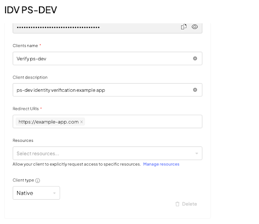

IDV: Implement native webview using hosted experience
Note
You can integrate our Identity Verification (IDV) hosted application into a native Android or iOS application. To do so, implement CustomTabs/WebViewon Android or ASWebAuthenticationSession on IOS.
For hybrid apps, we strongly recommend using the native Identity Verification SDKs (Android or IOS).
At a high level, the process includes the following steps:
- Create a session
- Present the session to the user
- Handle a callback on session completion
In order to handle the callback, you’ll need to implement a mechanism (app links or custom schema links) through which your app can handle links.
Step 1: Create a session
To create your first identity verification session, you need to do the following:
- Create an app in the admin portal. See Step 1 in the hosted experience guide.
- Obtain an access token on your backend. See Step 2 in the hosted experience guide.
- Use that access token to create a session. See Step 3 in the hosted experience guide. This will include the following:
3.1. The client will request the backend to create a session.
3.2. The backend response will contain astart_token. You can use this token to start the verification on the client side.
Step 3 requires you to set the session callback_url value to a URL which will activate your app. See Step 3: Handle completion callback below for additional information.
For additional context, see the Implement IDV hosted expirience.
Step 2: Present the session to user
After creating your session, you need to direct your end user to the identity verification page:
- Use the
start_tokenfrom the response (see API documentation for this call) to open the in-app browser tab. This is where the verification process will take place. Your options:- On Android, you can use
CustomTabsorWebView. - On IOS, use
ASWebAuthenticationSession.
- On Android, you can use
- Make sure the in-app browser points to our web app:
https://api.transmitsecurity.io/verify/app/{start_token}
Example `CustomTabs` Android implementation (Kotlin):
override fun onActivityResult(requestCode: Int, resultCode: Int, data: Intent?) {
super.onActivityResult(requestCode, resultCode, data)
if (requestCode == RESULT_CODE_CHROME_TABS) {
if (resultCode == Activity.RESULT_CANCELED) {
//handle user cancellation
}
}
}
private fun startCustomTabsActivity() {
// Building the intent and starting the CustomTabsActivity
val customTabIntent: Intent
// Creating the custom tab intent builder and customizing the toolbar
val customTabIntentBuilder = CustomTabsIntent.Builder()
customTabIntentBuilder.apply {
setUrlBarHidingEnabled(true)
}
customTabIntent = customTabIntentBuilder.build().intent
customTabIntent.apply {
// Note the updated base URL
data = Uri.parse("https://api.transmitsecurity.io/verify/app/" + [START_TOKEN])
flags = Intent.FLAG_ACTIVITY_NO_HISTORY and
Intent.FLAG_ACTIVITY_NEW_TASK and
Intent.FLAG_ACTIVITY_SINGLE_TOP
}
startActivityForResult(customTabIntent, RESULT_CODE_CHROME_TABS)
Example `WebView` Android implementation (Kotlin):
webView.setWebViewClient(WebViewClient())
// Grant web view video capture permissions
webView.webChromeClient = object : WebChromeClient() {
override fun onPermissionRequest(request: PermissionRequest) {
if (Build.VERSION.SDK_INT >= Build.VERSION_CODES.LOLLIPOP) {
for (r in request.resources) {
if (r == PermissionRequest.RESOURCE_VIDEO_CAPTURE) {
request.grant(arrayOf(PermissionRequest.RESOURCE_VIDEO_CAPTURE))
break
}
}
}
}
}
val webSettings: WebSettings = webView.getSettings()
webSettings.javaScriptEnabled = true
webSettings.allowFileAccess = false
webSettings.mediaPlaybackRequiresUserGesture = false
// Note the updated base URL
webView.loadUrl("https://api.transmitsecurity.io/verify/app/" + [START_TOKEN])
Example `ASWebAuthenticationSession` IOS implementation (Swift):
private var authSession: ASWebAuthenticationSession?
@IBAction func startVerification() {
let redirectUrl = "YOUR_REDIRECT_URL"
let startToken = "START_TOKEN_FROM_CREATE_SESSION"
// Note the updated base URL
let verifyUrl = URL(string: "https://api.transmitsecurity.io/verify/app/\(startToken)")!
let callBackScheme = URL(string: redirectUrl)!.scheme
self.authSession = ASWebAuthenticationSession(
url: verifyUrl,
callbackURLScheme: callBackScheme,
completionHandler: { [weak self] (callBack: URL?, error: Error?) in
// obtain the `sessionId` and `state` from callBack
})
self.authSession?.presentationContextProvider = self
self.authSession?.start()
}
// MARK: ASWebAuthenticationPresentationContextProviding
func presentationAnchor(for session: ASWebAuthenticationSession) -> ASPresentationAnchor {
return topMostViewController ?? ASPresentationAnchor()
}
After opening the in-app browser, the user will interact with our web app and take the required pictures to complete the session.
Step 3: Handle completion callback
When the identity verification process completes, our web app will trigger a redirect to the callback_url value that you specified when you created a session.
On Android, that callback URL should point to your app, via deep links or app links.
For iOS, you may handle the callback URL directly, using the completionHandler as explained below. If you implement the web experience without using the ASWebAuthenticationSession component, you may handle the callback via universal link.
Depending on the operating system and app configuration, you may want to close the in-app browser after receiving the callback. Otherwise, it could still be accessible via the back button.
When processing the callback, note the session_id and state params. You’ll need to pass those params to your backend:
- Use the
statevalue to validate that the server is familiar with the current session. - Use the
session_idvalue to fetch the session result.
See the results section (step 5 of the IDV hosted experience guide) and the API reference for more details.
Implementation notes
IOS implementation notes
Parse the callBack received upon handling (completionHandler) of the ASWebAuthenticationSession.
self.authSession = ASWebAuthenticationSession(
url: verifyUrl,
callbackURLScheme: callBackScheme,
completionHandler: { [weak self] (callBack: URL?, error: Error?) in
// Next up, obtain the `sessionId` and `state` from the callBack
})
Android implementation notes
Update the Application Manifest to support deep linking, which is required to return to the application once the verification process has been completed. The deep link will correspond to the callback URL defined in your journey configuration. Add this snippet to the Android Application manifest inside the application tag.
<activity android:name="YourActivity">
<intent-filter>
<action android:name="android.intent.action.VIEW" />
<category android:name="android.intent.category.DEFAULT" />
<category android:name="android.intent.category.BROWSABLE" />
<data
android:host="yourhostname"
android:scheme="yourschemename" />
</intent-filter>
</activity>
Note
You need to replace yourhostname and yourschemename with your host name and scheme. This will result in a deep link that looks like: yourschemename://yourhostname.
Android troubleshooting
Issue: Denied starting an intent without a user gesture
Android does not let the WebView to start an app intent without an explicit user action. This happens when the redirect URI has a web protocol (http/https).
Make sure the redirect URI you define is proprietary schema://host. Example: myapp://identity-verification
Issue: Incorrect redirect URIs
The console app redirect URI and client-side redirect URI are not the same thing:
- Console app redirect URI should follow the web protocol (
http/https). - Client-side redirect URI should be defined as proprietary
schema://host, for example,myapp://identity-verification. This should be the same URI that your backend passes as acallback_urlin the verification API.

Required permissions
Android permissions
The following permissions should be generated for native Android WebView:
android.permission.INTERNET: This permission allows the app to access the Internet.android.permission.CAMERA: This permission allows the app to use the device's camera.
iOS permissions
Your app requires camera permissions in order to capture the images required for the verification process.
Open the Info.plist file as a Property List and add the following key: Privacy - Camera Usage Description. The key value contains an explanation for why the permission is needed, which will be displayed to the user to approve. For example: This is needed to capture images for the verification process.
Known issues and troubleshooting
Native IOS - WebKit Bug 253186
IOS 16.4 - See WebKit Bug 253186 - REGRESSION iOS 16.4 beta selects ultra-wide for facingMode: environment.
16.4 beta selects ultra-wide for facingMode: environment. When the user tries to take a picture of the document, he need to move the device closer or further away to find the ideal focus of the card. By choosing the wide angle camera the user will need to move further away from the document.
Native Android: Webview Chromium issue 669492
For native android WebView, there is a known bug, which takes the default camera of the device (which is a the wide lens camera) due to some permissions restrictions, that need to be aware of. This bug affects some Android devices.
Official name: Issue 669492: Android WebView chromium is giving empty label and kind fields in MediaDeviceInfo, when enumerateDevices() is called.
This is an Android bug that can only be resolved by Android. We highly recommend using a solution with custom tabs to avoid this issue.